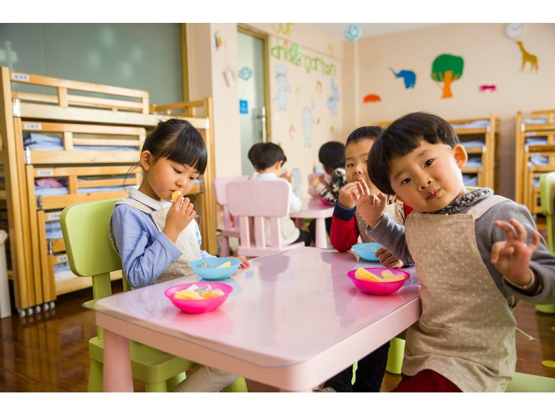
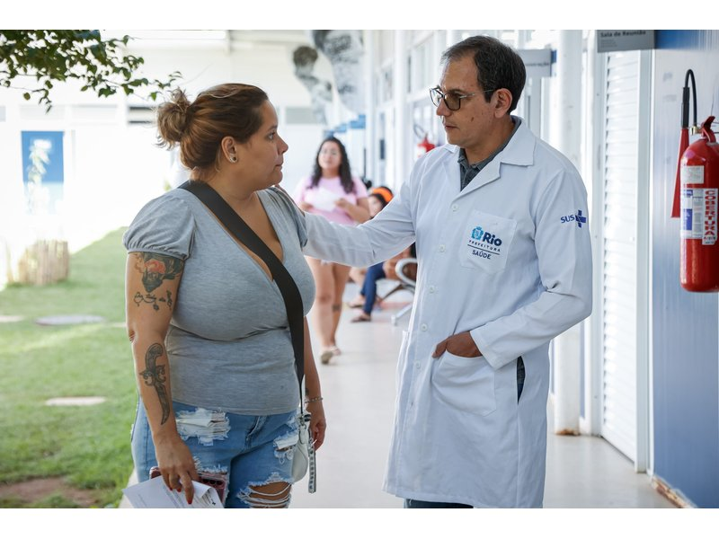
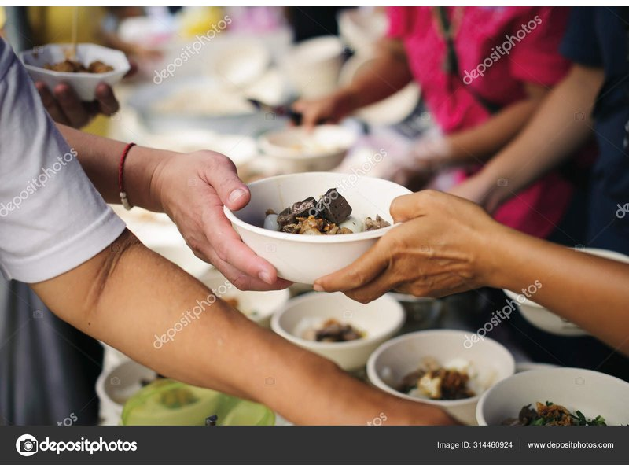
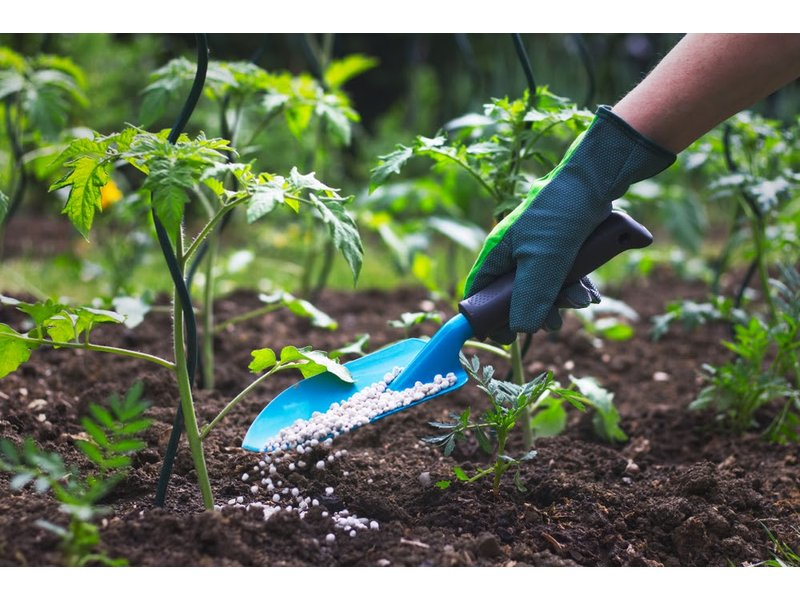

Projetos Ativos
Projeto Educação para Todos
Nosso programa de educação oferece aulas gratuitas para crianças e adolescentes em comunidades
carentes. Focamos em matemática, português e informática básica, preparando os alunos para
um futuro melhor.

Como Participar:
Voluntários podem atuar como professores, monitores ou auxiliares nas aulas. Não é necessário
experiência prévia, apenas disposição em ajudar.
Projeto Saúde Comunitária
Realizamos campanhas de saúde preventiva, oferecendo atendimento médico gratuito, vacinação
e orientações sobre higiene e bem-estar em áreas de vulnerabilidade social.

Como Participar:
Profissionais de saúde podem oferecer suas habilidades, assim como pessoas sem formação específica
que desejam auxiliar na organização e acolhimento de pacientes.
Projeto Alimentação Segura
Distribuímos alimentos nutritivos e realizamos oficinas de culinária sustentável para famílias
em situação de insegurança alimentar, promovendo autonomia e bem-estar.

Como Participar:
Cozinheiros, nutricionistas e pessoas interessadas em culinária podem contribuir. Também aceitamos
doações de alimentos não perecíveis.
Projeto Sustentabilidade Ambiental
Trabalhamos na preservação ambiental através de projetos de reflorestamento, limpeza de áreas
públicas e educação sobre sustentabilidade e reciclagem.

Como Participar:
Todos podem participar! Desde atividades de limpeza até plantio de árvores. Oferecemos treinamento
para quem desejar aprender mais sobre conservação ambiental.